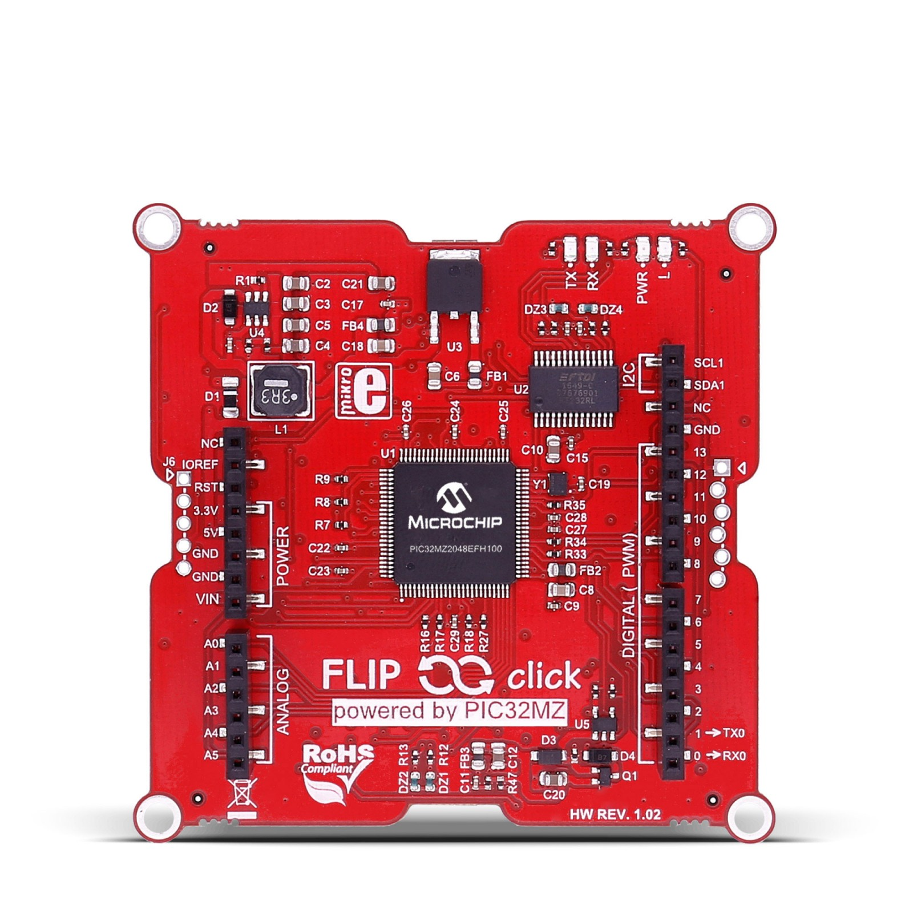

Flip & Click PIC32MZ
{kind=link}

The Flip & Clock PIC32MZ development board
Documentation for the port of NuttX to the Mikroe Flip&Click PIC32MZ board. That board features the PIC32MZ2048EFH100 MCU. Thanks to John Legg for contributing the Flip&Click PIC32MZ board!
SSD1306 OLED
Hardware
The HiletGo is a 128x64 OLED that can be driven either via SPI or I2C (SPI is the default and is what is used here). I have mounted the OLED on a proto click board. The OLED is connected as follows:
OLED |
ALIAS |
DESCRIPTION |
PROTO CLICK |
|---|---|---|---|
GND |
Ground |
GND |
|
VCC |
Power Supply |
5V (3-5V) |
|
D0 |
SCL,CLK,SCK |
Clock |
SCK |
D1 |
SDA,MOSI |
Data |
MOSI,SDI |
RES |
RST,RESET |
Reset |
RST (GPIO OUTPUT) |
DC |
AO |
Data/Command |
INT (GPIO OUTPUT) |
CS |
Chip Select |
CS (GPIO OUTPUT) |
Note
This is a write-only display (MOSI only)!
SPI
SPI3 is available on pins D10-D13 of the Arduino Shield connectors where you would expect them. The SPI connector is configured as follows:
Pin |
J1 |
Board Signal |
PIC32MZ |
|---|---|---|---|
D10 |
8 |
SPI3_SCK |
RB14 |
D11 |
7 |
SPI3_MISO |
RB9 |
D12 |
6 |
SPI3_MOSI |
RB10 |
D13 |
5 |
SPI3_SS |
RB9 |
SPI1 and SPI2 are also available on the mikroBUS Click connectors (in addition to 5V and GND). The connectivity between connectors A and B and between C and D differs only in the chip select pin:
MikroBUS A:
Pin |
Board Signal |
PIC32MZ |
|---|---|---|
CS |
SPI2_SS1 |
RA0 |
SCK |
SPI2_SCK |
RG6 |
MISO |
SPI2_MISO |
RC4 |
MOSI |
SPI2_MOSI |
RB5 |
MikroBUS B:
Pin |
Board Signal |
PIC32MZ |
|---|---|---|
CS |
SPI2_SS0 |
RE4 |
SCK |
SPI2_SCK |
RG6 |
MISO |
SPI2_MISO |
RC4 |
MOSI |
SPI2_MOSI |
RB5 |
MikroBUS C:
Pin |
Board Signal |
PIC32MZ |
|---|---|---|
CS |
SPI1_SS0 |
RD12 |
SCK |
SPI1_SCK |
RD1 |
MISO |
SPI1_MISO |
RD2 |
MOSI |
SPI1_MOSI |
RD3 |
MikroBUS D:
Pin |
Board Signal |
PIC32MZ |
|---|---|---|
CS |
SPI1_SS1 |
RD13 |
SCK |
SPI1_SCK |
RD1 |
MISO |
SPI1_MISO |
RD2 |
MOSI |
SPI1_MOSI |
RD3 |
Serial Console
Todo
I am not sure if the USB VCOM ports are available to the software. That is likely another serial port option
Convenient U[S]ARTs that may be used as the Serial console include:
An Arduino Serial Shield. The RX and TX pins are available on the Arduino connector D0 and D1 pins, respectively. These are connected to UART5, UART5_RX and UART5_TX which are RD14 and RD15, respectively.
2) Mikroe Click Serial Shield. There are four Click bus connectors with serial ports available as follows:
Click A:
UART4UART4_RXandUART4_TXwhich areRG9andRE3, respectively.Click B:
UART3UART3_RXandUART3_TXwhich areRF0andRF1, respectively.Click C:
UART1UART1_RXandUART1_TXwhich areRC1andRE5, respectively.Click D:
UART2UART2_RXandUART2_TXwhich areRC3andRC2, respectively.
Other serial ports are probably available on the Arduino connector. I will leave that as an exercise for the interested reader.
The outputs from these pins is 3.3V. You will need to connect RS232 transceiver to get the signals to RS-232 levels. The simplest options are an expensive Arduino RS-232 shield or a Mikroe RS-232 Click board.
Warning
I have been unable to get the RS-232 Click to work in the mikroBUS A slot. The PIC32MZ did not receive serial input. It appears that there is an error in the some documentation: Either RG9 is not connected to UART4_RX or the PPS bit definitions are documented incorrectly for UART4.
Switching to UART3 eliminates the problem and the serial console is fully functional. I have not tried the other options of UART1, 2, or 5.
On Board Debug Support
There are several debug options:
Using the Arduino IDE (chipKIT core). This is available on the USB-UART port between the C and D MikroBUS sockets. Usage is described in the Flip&Click User Manual.
Note
I don’t think trying to use the Arduino IDE is a good option.
Using the mikroC USB HID bootloader. This is is available on the USB port between the A and B MikroBUS sockets. Usage is described in the Flip&Click User Manual.
There is a simple application available at Mikroe that will allow you to write .hex files via the USB HID bootloader. However, in order to use the bootloader, you will have to control the memory map so that the downloaded code does not clobber the bootloader code FLASH, data memory, exception vectors, etc.
Note
At this point, I have found no documentation describing how to build the code outside of the Mikroe toolchain for use with the Mikroe bootloader.
There is an undocumented and unpopulated PICKit3 connector between the B and C mikroBUS sockets.
There is an undocumented and unpopulated mikroProg connector between the A and D mikroBUS sockets.
Warning
Since 3) and 4) are undocumented, this would require some research and would, most likely, clobber the USB HID bootloader (and possibly the Arduino support as well).
Installation
From the mikroProg website https://www.mikroe.com/mikroprog-pic-dspic-pic32 Download:
Drivers for mikroProg Suite: https://download.mikroe.com/setups/drivers/mikroprog/pic-dspic-pic32/mikroprog-pic-dspic-pic32-drivers.zip
- mikroProg Suite for PIC, dsPIC, PIC32 v260:
Install the mikroProg Suite. From things I have read, I gather that you must be Administrator when installing the tool. The instructions say that it will automatically install the drivers. It did not for me.
To install the drivers… You will find several directories under
mikroprog-pic-dspic-pic32-drivers/. Select the correct directory and run the
.EXE file you find there.
When I started the mikroProg suite, it could not find the USB driver. After a few frustrating hours of struggling with the drivers, I found that if I start the mikroProg suite as a normal user, it does not find the driver. But if I instead start the mikroProg suite as Administrator… There it is! A little awkward but works just fine.
Flashing
Warning
Following these steps will most certainly overwrite the bootloader that was factory installed in FLASH!
Due to the position and orientation of the mikroProg connector you may lose functionality: If you attach mikroProg to the red side of the board, you will not be able to use the Arduino Shield Connector while the mikroProg connected. If you attach mikroProg to the white side of the board, you will similarly lose access to mikroBUS connectors A and D.
Hindsight is 20/20 and in retrospect I would look for a right handler header to priven the mikroProg connector from interfering with the Arduino connection.
Tool Issues
If using a Jlink, note that only these versions work with PIC32:
J-Link BASE / EDU V9 or later
J-Link ULTRA+ / PRO V4 or later
This is the command to use:
$ JLinkGDBServer -device PIC32MZ2048EFH100 -if 2-wire-JTAG-PIC32 -speed 12000
Hardware setup
You will need to add a five pin header to the mikroProg connector between the A and D mikroBUS sockets.
Connect the mikroProg to the outer 5 pins of the mikroProg’s 10-pin connector to the 5-pin header, respecting the pin 1 position: The colored wire on the ribbon cable should be on the same side as the tiny arrow on the board indicating pin 1.
Connect the mikroProg to your computer with the provided USB cable; also power the Flip’n’Clip board with another USB cable connected to the computer. Either USB port will provide power.
Creating Compatible NuttX HEX files
Intel Hex Format Files
When NuttX is built it will produce two files in the top-level NuttX directory:
nuttx: This is an ELF filenuttx.hex: This is an Intel Hex format file. This is controlled by the settingCONFIG_INTELHEX_BINARYin the.configfile.
The PICkit tool wants an Intel Hex format file to burn into FLASH. However,
there is a problem with the generated nuttx.hex: The tool expects the
nuttx.hex file to contain physical addresses. But the nuttx.hex file
generated from the top-level make will have address in the KSEG0 and
KSEG1 regions.
tools/pic32/mkpichex:
There is a simple tool in the NuttX tools/pic32 directory that can be used
to solve both issues with the nuttx.hex file. But, first, you must build the
tool:
$ cd tools/pic32
$ make -f Makefile.host
Now you will have an executable file called mkpichex (or mkpichex.exe on
Cygwin). This program will take the nutt.hex file as an input, it will convert
all of the KSEG0 and KSEG1 addresses to physical address, and it will
write the modified file, replacing the original nuttx.hex.
To use this file, you need to do the following things:
$ export PATH=??? # Add the NuttX tools/pic32mx directory to your
# PATH variable
$ make # Build nuttx and nuttx.hex
$ mkpichex $PWD # Convert addresses in nuttx.hex. $PWD is the path
# to the top-level build directory. It is the only
# required input to mkpichex.
This procedure is automatically performed at the end of a build.
Configurations
The following command can configure NuttX for this board, where <config> is
one of the configurations listed below:
$ tools/configure.sh flipnclick-pic32mz:<subdir>
nsh
This is the NuttShell (NSH) using the NSH startup logic at
apps/examples/nsh.
Note
UART3 is configured as the Serial Console. This assumes that you will be using a Mikroe RS-232 Click card in the mikroBUS B slot. Other serial consoles may be selected by re- configuring (see the section “Serial Consoles” above).
Note
By default, the Pinguino MIPs tool chain is used. This toolchain selection
can easily be changed with make menuconfig.
Note
These are other things that you may want to change in the configuration:
CONFIG_PIC32MZ_DEBUGGER_ENABLE=n: Debugger is disabled
CONFIG_PIC32MZ_TRACE_ENABLE=n: Trace is disabled
CONFIG_PIC32MZ_JTAG_ENABLE=n: JTAG is disabled
nxlines
This is an NSH configuration that supports the NX graphics example at
apps/examples/nxlines as a built-in application.
Note
This configuration derives from the nsh configuration. All of the notes there apply here as well.
Note
The default configuration assumes there is the custom HiletGo OLED in the mikroBUS A slot (and a Mikroe RS-232 Click card in the mikroBUS B slot). That is easily changed by reconfiguring, however. See the section entitled “HiletGo OLED” for information about this custom click card.
2018-02-10:
The debug output indicates that the nxlines example is running with no errors, however, nothing appears on the OLED display. I tried slot D with same result. I also ported the configuration to the Flip&Click SAM3X and got the same result. There could be SPI issues on the PIC32MX, but more likely that there is an error in my custom HiletGo Click. Damn!